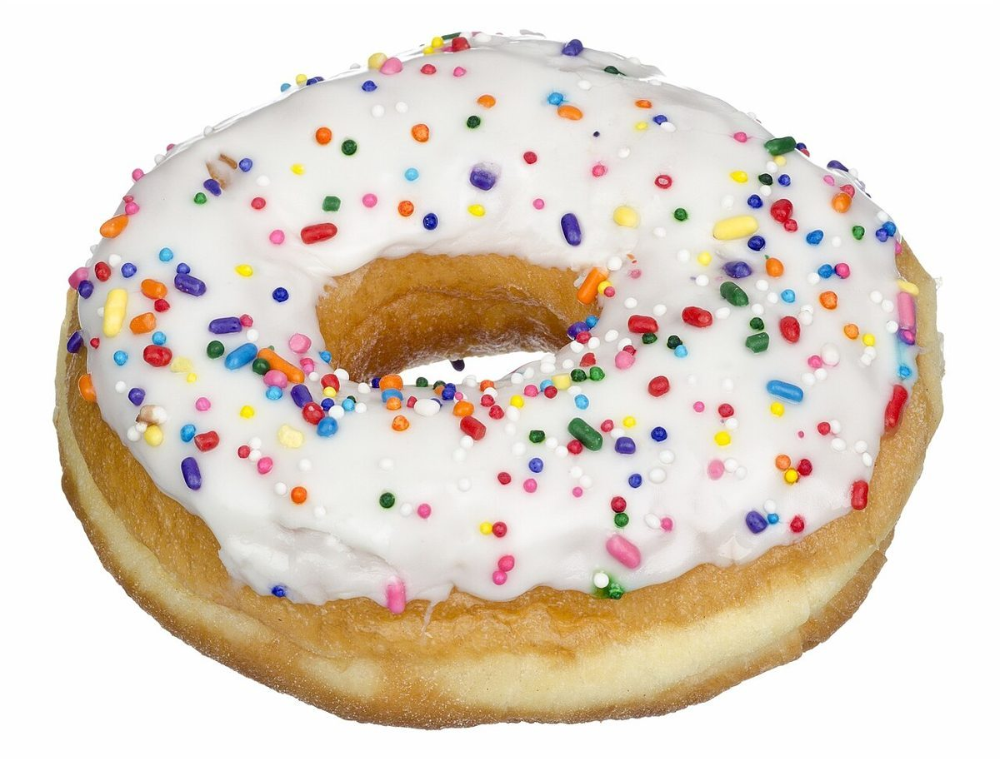
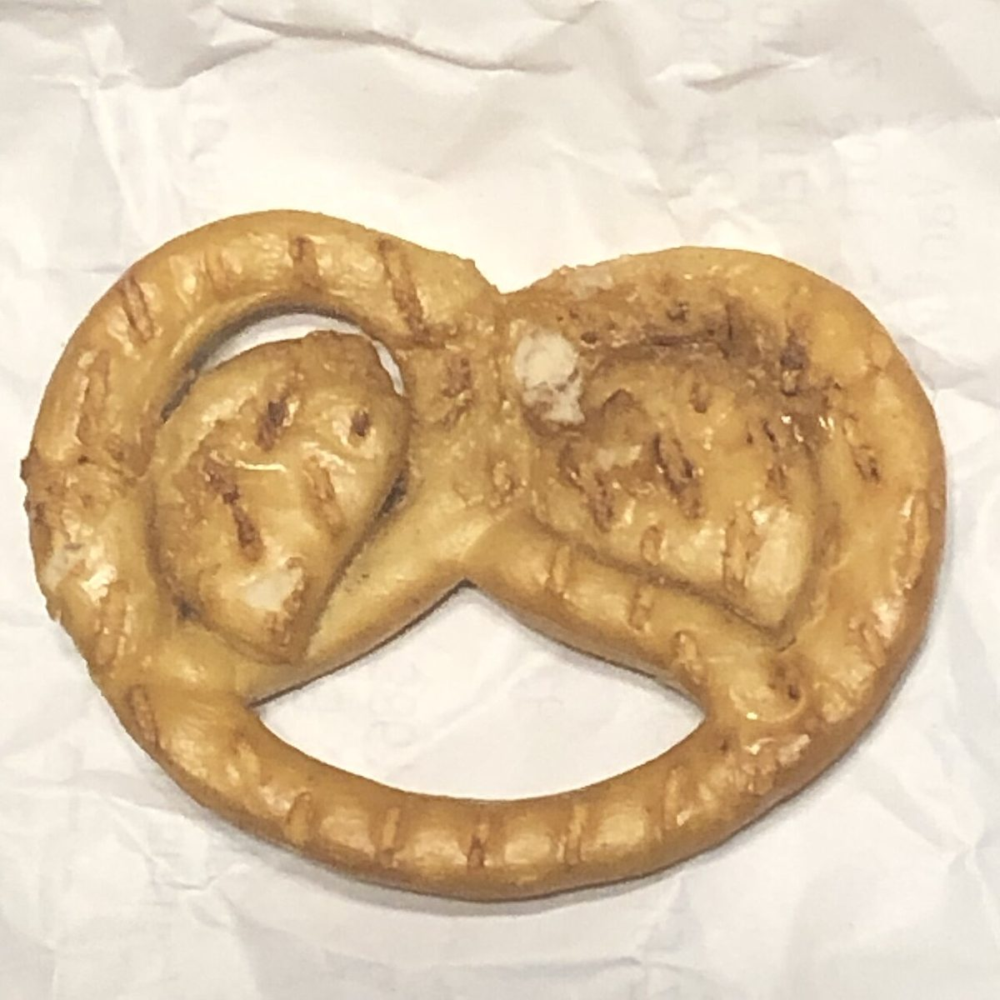

HEADS / 表
サニーサイドカフェ
表か、裏か。コインを手のひらに載せるように、お店のことを少しずつ紹介します。
鳥取県米子市両三柳2672-1 ・ カフェ


表と裏の組(イメージ写真)
同じものを表と裏から眺めると、コインのように二つの顔が見えてきます。


HEADS / 表
表か、裏か。コインを手のひらに載せるように、お店のことを少しずつ紹介します。
鳥取県米子市両三柳2672-1 ・ カフェ


同じものを表と裏から眺めると、コインのように二つの顔が見えてきます。